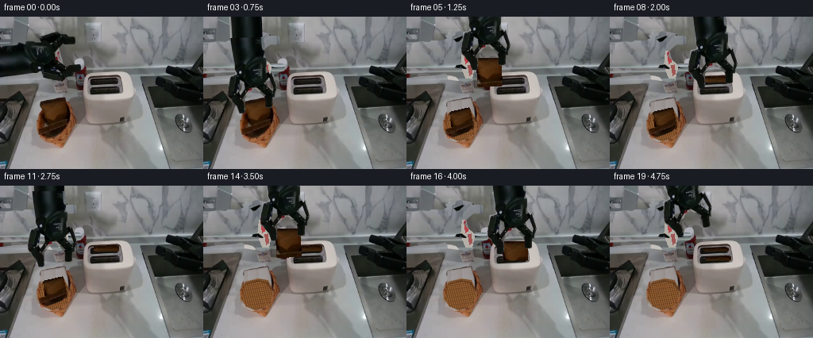
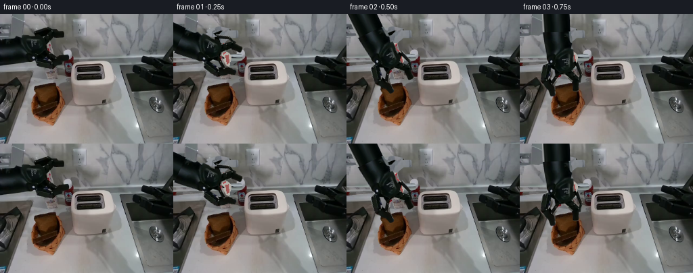
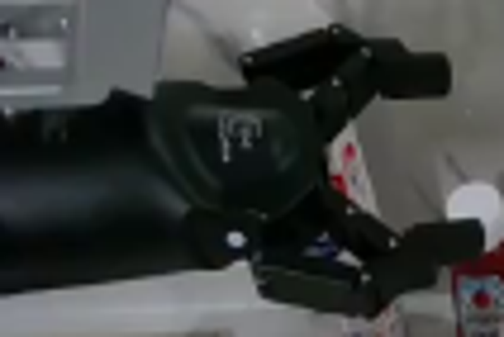
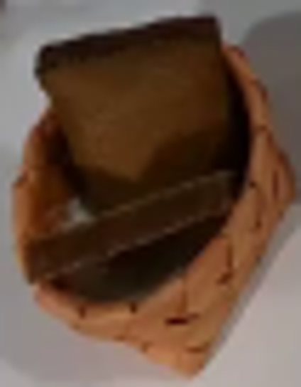
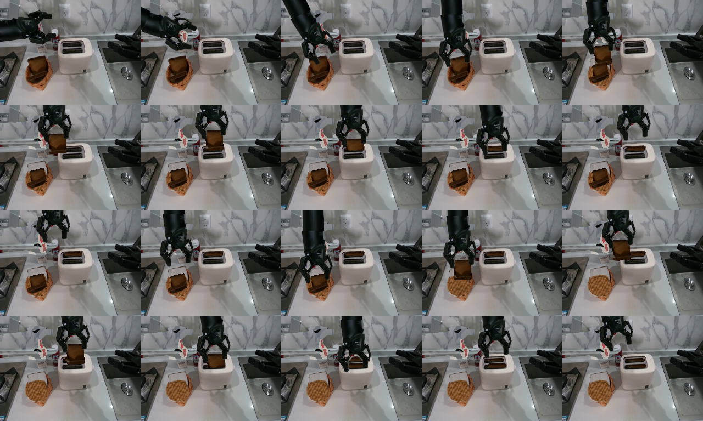
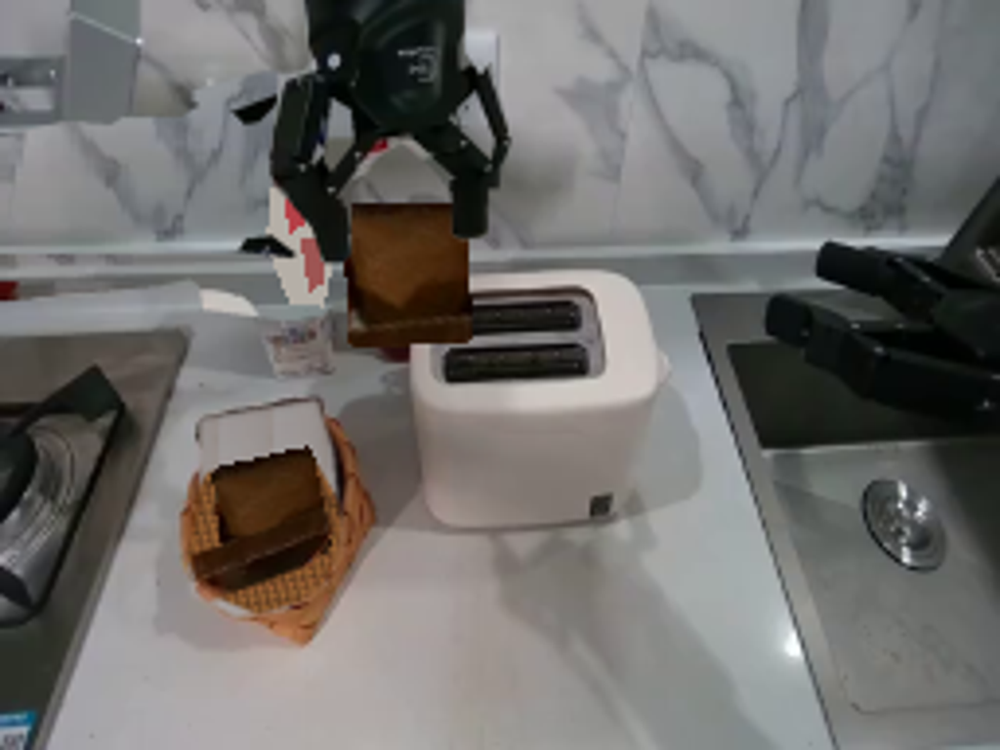
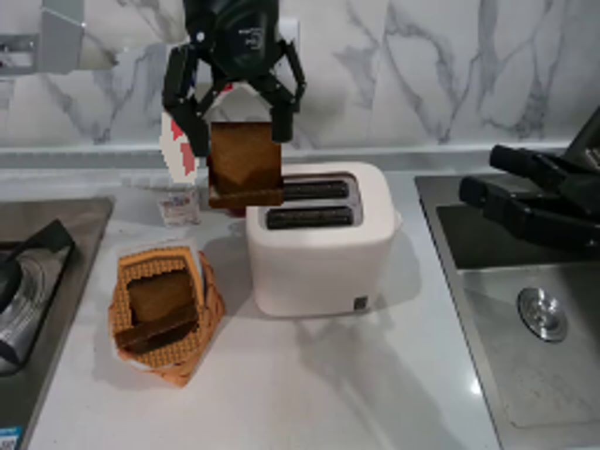

CODING AGENTS AS PIXEL WORLD MODELS
traex/GPT-6.1-Sol · common50_0001
点击播放 · 原生 RGB 像素
逐轮保存的候选
回放视频、检查图与代码变化。
每份候选均可单独播放。实际图片检查记录在下方工具轨迹中。
候选 01播放与检查图
点击播放 · 原生 RGB 像素


展开代码变化
--- 上一保存版本
+++ 本次保存版本
@@ -0,0 +1,217 @@
+from pathlib import Path
+import math
+import numpy as np
+from PIL import Image, ImageDraw, ImageFilter
+import artifact_io
+
+ROOT = Path(__file__).resolve().parent
+W,H = 256,192
+S = 3
+rng = np.random.default_rng(42)
+base = Image.open(ROOT/'first_frame.png').convert('RGB')
+src = np.array(base)
+
+def polygon_mask(points, holes=(), blur=.25):
+ im=Image.new('L',(W*S,H*S),0); d=ImageDraw.Draw(im)
+ d.polygon([(round(x*S),round(y*S)) for x,y in points],fill=255)
+ for p in holes:d.polygon([(round(x*S),round(y*S)) for x,y in p],fill=0)
+ im=im.resize((W,H),Image.Resampling.LANCZOS)
+ return im.filter(ImageFilter.GaussianBlur(blur)) if blur else im
+
+def layer(im,mask):
+ q=im.convert('RGBA');q.putalpha(mask);return q
+
+def composite(bg,fg):
+ return Image.alpha_composite(bg.convert('RGBA'),fg.convert('RGBA'))
+
+arm_poly=[(0,36),(17,32),(29,33),(32,31),(47,31),(53,27),(50,24),(69,19),(82,22),(82,25),(94,25),(95,27),(95,32),(94,34),(83,34),(76,40),(70,47),(74,53),(83,60),(99,60),(101,62),(101,67),(92,70),(85,76),(81,80),(74,81),(53,78),(52,72),(49,70),(40,72),(0,76)]
+holes=[[(57,28),(70,23),(75,24),(67,32),(62,33)],[(62,60),(70,59),(78,65),(75,67),(59,65)]]
+arm_mask=polygon_mask(arm_poly,holes,0.15)
+# Reconstruct the small region exposed when the mobile left arm leaves it.
+clean=np.array(base).copy()
+for y in range(18,83):
+ for x in range(103):
+ if y<65:
+ # The same marble backsplash, copied from an unoccluded adjacent area.
+ xx=156+int(x*.78)
+ yy=min(64,y)
+ clean[y,x]=src[yy, min(247,xx)]
+ elif y<72:
+ xx=117+int(x*.6)
+ clean[y,x]=src[61+(y-65),xx]
+ else:
+ xx=105+int(x*.9)
+ clean[y,x]=src[67+(y-72),min(xx,176)]
+# Keep the small condiment containers in the background, synthesizing only their hidden tops.
+reconstruction=Image.fromarray(clean)
+rd=ImageDraw.Draw(reconstruction)
+rd.polygon([(70,43),(77,42),(85,64),(82,78),(74,77),(68,62)],fill=(181,175,167))
+rd.polygon([(72,45),(74,43),(78,47),(77,57),(74,59)],fill=(182,65,72))
+rd.polygon([(77,61),(81,60),(82,72),(79,74)],fill=(158,85,83))
+# A cylindrical forearm, wrist housing, and metal jaw assembly are a single
+# rigid pixel-derived body; its geometry never scales or changes shape.
+static=base.copy(); static.paste(reconstruction,(0,0),arm_mask.filter(ImageFilter.MaxFilter(3)))
+# Sprite extends naturally beyond the original left crop.
+EXT=130
+sprite=Image.new('RGBA',(W+EXT,H),(0,0,0,0))
+sprite.paste(layer(base,arm_mask),(EXT,0))
+patch=base.crop((0,35,27,76)).resize((EXT+6,41),Image.Resampling.BICUBIC).convert('RGBA')
+pma=Image.new('L',patch.size,255)
+patch.putalpha(pma); sprite.alpha_composite(patch,(0,35))
+# Blend the extension seam; it is normally outside the field of view.
+pivot=np.array([47.,46.])
+
+def rigid_arm(wrist,angle):
+ a=math.radians(angle);c,s=math.cos(a),math.sin(a)
+ # Inverse map in image coordinates to an extended source sprite.
+ tx,ty=wrist
+ co=(c,s,pivot[0]+EXT-c*tx-s*ty,-s,c,pivot[1]+s*tx-c*ty)
+ return sprite.transform((W,H),Image.Transform.AFFINE,co,Image.Resampling.BICUBIC)
+
+# Remove only the bread, retaining the source basket outline and woven rim.
+bread_region=polygon_mask([(51,107),(81,102),(85,115),(87,137),(83,149),(73,156),(60,158),(49,152),(48,142),(51,128),(51,119)],blur=.6)
+empty=base.copy()
+# Texture of the counter, sampled just in front of the basket.
+counter=np.array(base).copy()
+for y in range(101,160):
+ for x in range(47,90):
+ pix=src[169+(y%9),103+(x%14)].astype(float)
+ # Counter brightness decreases slightly behind the basket.
+ fac=.91+ .08*(y-101)/59
+ counter[y,x]=np.clip(pix*fac,0,255)
+interior=Image.fromarray(counter).resize((W*S,H*S),Image.Resampling.BICUBIC)
+d=ImageDraw.Draw(interior)
+# The basket's now-uncovered hollow is woven, rather than a blank brown patch.
+poly=[(53,121),(69,117),(81,119),(88,131),(86,144),(80,153),(66,157),(54,152),(48,143),(48,132)]
+d.polygon([(x*S,y*S) for x,y in poly],fill=(123,78,39))
+# Crosshatched wicker on the bottom, with a gradual contact shadow near the back.
+inner_mask=polygon_mask(poly,blur=.2).resize((W*S,H*S))
+weave=Image.new('RGB',(W*S,H*S),(123,78,40)); wd=ImageDraw.Draw(weave)
+for j in range(19):
+ y=115+j*2.5
+ col=(int(157+rng.integers(-10,11)),int(99+rng.integers(-8,9)),int(50+rng.integers(-5,6)))
+ wd.line([(45*S,int(y*S)),(90*S,int((y-6)*S))],fill=(69,43,26),width=3)
+ wd.line([(45*S,int((y+.55)*S)),(90*S,int((y-5.45)*S))],fill=col,width=4)
+for j in range(20):
+ x=42+j*2.7
+ wd.line([(int(x*S),113*S),(int((x+13)*S),162*S)],fill=(102,64,34),width=3)
+ wd.line([(int((x+.65)*S),113*S),(int((x+13.65)*S),162*S)],fill=(158,103,53),width=2)
+interior.paste(weave,(0,0),inner_mask)
+# Inner edge shadow, rim preserved from first-frame pixels outside the removal.
+idraw=ImageDraw.Draw(interior)
+idraw.line([(53*S,124*S),(69*S,120*S),(80*S,122*S),(85*S,130*S)],fill=(92,57,29),width=5)
+interior=interior.resize((W,H),Image.Resampling.LANCZOS).filter(ImageFilter.GaussianBlur(.28))
+empty.paste(interior,(0,0),bread_region)
+# Use the same reconstructed background for either basket state.
+empty.paste(reconstruction,(0,0),arm_mask.filter(ImageFilter.MaxFilter(3)))
+
+# Extract the bread's original crust and crumb texture into a normalized square.
+def homography(outpts,inpts):
+ A=[];b=[]
+ for (x,y),(u,v) in zip(outpts,inpts):
+ A += [[x,y,1,0,0,0,-u*x,-u*y],[0,0,0,x,y,1,-v*x,-v*y]]; b += [u,v]
+ return np.linalg.solve(np.asarray(A,float),np.asarray(b,float))
+B=100
+canonical=[(0,0),(B,0),(B,B),(0,B)]
+source_quad=[(51.3,107.7),(80.8,102.8),(84.7,135.0),(56.7,143.0)]
+h=homography(canonical,source_quad)
+breadtex=base.transform((B,B),Image.Transform.PERSPECTIVE,h,Image.Resampling.BICUBIC)
+# Rounded square crust silhouette and fine, source-derived crumb.
+mask=Image.new('L',(B,B),0);md=ImageDraw.Draw(mask)
+md.rounded_rectangle((0,0,B-1,B-1),radius=7,fill=255)
+breadtex=layer(breadtex,mask)
+
+def bread_at(quad,darken=1.0):
+ h=homography(quad,canonical)
+ result=breadtex.transform((W,H),Image.Transform.PERSPECTIVE,h,Image.Resampling.BICUBIC)
+ if darken!=1:
+ ar=np.array(result);ar[:,:,:3]=np.clip(ar[:,:,:3].astype(float)*darken,0,255).astype(np.uint8);result=Image.fromarray(ar)
+ return result
+
+# The second slice leans in the basket and rotates to an upright position as lifted.
+second_quad=np.array([(54,120),(80,114),(85,141),(58,151)],float)
+second_basket=bread_at(second_quad,.90)
+# Retain the visible lower crust from the source on the second resting slice.
+crust_mask=polygon_mask([(49,142),(83,130),(85,136),(80,144),(53,154),(50,151)],blur=.3)
+crust=layer(base,crust_mask)
+second_basket=composite(second_basket,crust)
+
+# Location, orientation and physical task state at the prescribed 4-Hz samples.
+poses=[
+ ((47,46),0), ((51,48),25), ((61,60),65), ((65,67),88),
+ ((72,45),90), ((104,13),90), ((134,7),90), ((134,22),90),
+ ((134,36),90), ((134,10),90), ((101,4),90), ((70,48),90),
+ ((67,78),90), ((74,51),90), ((107,15),90), ((137,13),90),
+ ((137,31),90), ((137,48),90), ((137,23),90), ((98,8),80),
+]
+
+# Slot-specific occlusion: the bread disappears down into the rigid toaster,
+# behind its existing near metal lip, not through its white exterior.
+def inserted(bread,slot_y):
+ mask=np.array(bread.getchannel('A'),float)
+ yy=np.arange(H)[:,None]
+ # The opening's back edge is behind the bread; its front edge occludes it.
+ limit=slot_y+2.0
+ mask *= np.clip(limit+.5-yy,0,1)
+ out=bread.copy();out.putalpha(Image.fromarray(mask.astype(np.uint8)));return out
+
+# Original upper slice at contact, so the pickup does not change its appearance.
+original_slice_mask=polygon_mask([(51,107),(81,102),(84,114),(86,132),(82,138),(69,144),(57,145),(53,137),(52,123)],blur=.3)
+original_slice=layer(base,original_slice_mask)
+
+def square_for(wrist):
+ x,y=wrist
+ return np.array([(x-16.0,y+39.0),(x+15.5,y+38.5),(x+17,y+75),(x-15,y+76)])
+
+frames=[]
+for i,(wrist,ang) in enumerate(poses):
+ if i==0:
+ frames.append(np.array(base));continue
+ if i<4:
+ im=static.convert('RGBA')
+ else:
+ im=empty.convert('RGBA')
+ if i<=12:im=composite(im,second_basket)
+ # Soft table shadows follow the load without disturbing the fixed camera.
+ if 4<=i<=7 or 13<=i<=16:
+ sh=Image.new('RGBA',(W*S,H*S));sd=ImageDraw.Draw(sh)
+ x,y=wrist;sy=142 if x<95 else 113
+ sd.ellipse(((x-21)*S,(sy-3)*S,(x+22)*S,(sy+8)*S),fill=(34,29,24,29))
+ sh=sh.filter(ImageFilter.GaussianBlur(3*S)).resize((W,H),Image.Resampling.LANCZOS)
+ im=composite(im,sh)
+ if i>=4:
+ if i<=8:
+ quad=square_for(wrist)
+ if i==4:
+ # Carry it in its initial perspective, becoming aligned on approach.
+ quad=.55*quad+.45*(np.asarray(source_quad)+np.array([wrist[0]-65,wrist[1]-67]))
+ b=bread_at(quad)
+ if i>=7:b=inserted(b,80)
+ im=composite(im,b)
+ else:
+ q=np.array([(118,75.7),(150,75.3),(151,112),(119,113)],float)
+ # Bread settles the last few mm when released into the toaster rack.
+ if i>=18:q[:,1]+=2.2
+ im=composite(im,inserted(bread_at(q,.97 if i<18 else .92),80))
+ if i>=13:
+ if i<=17:
+ q=square_for(wrist)
+ b=bread_at(q,.91)
+ if i>=16:b=inserted(b,92)
+ im=composite(im,b)
+ else:
+ q=np.array([(121,87),(153,86.5),(154,124),(122,125)],float)
+ if i==19:q[:,1]+=1.8
+ im=composite(im,inserted(bread_at(q,.88),92))
+ # Mobile hand is always a rigid transform of the original visible robot.
+ arm=rigid_arm(wrist,ang)
+ im=composite(im,arm)
+ frames.append(np.asarray(im.convert('RGB'),dtype=np.uint8))
+
+frames=np.stack(frames)
+artifact_io.save(frames, ROOT)
+# A larger inspection sheet is useful for checking pickup and insertion boundaries.
+sheet=Image.new('RGB',(256*5,192*4),(30,30,30))
+for k,fr in enumerate(frames):sheet.paste(Image.fromarray(fr),(k%5*256,k//5*192))
+sheet.save(ROOT/'.tmp/all_frames.png')
+print('Saved',frames.shape,'RGB video to',ROOT)
候选 02播放与检查图
点击播放 · 原生 RGB 像素

展开代码变化
--- 上一保存版本
+++ 本次保存版本
@@ -27,6 +27,7 @@
arm_poly=[(0,36),(17,32),(29,33),(32,31),(47,31),(53,27),(50,24),(69,19),(82,22),(82,25),(94,25),(95,27),(95,32),(94,34),(83,34),(76,40),(70,47),(74,53),(83,60),(99,60),(101,62),(101,67),(92,70),(85,76),(81,80),(74,81),(53,78),(52,72),(49,70),(40,72),(0,76)]
holes=[[(57,28),(70,23),(75,24),(67,32),(62,33)],[(62,60),(70,59),(78,65),(75,67),(59,65)]]
arm_mask=polygon_mask(arm_poly,holes,0.15)
+erase_mask=polygon_mask(arm_poly,blur=.25).filter(ImageFilter.MaxFilter(3))
# Reconstruct the small region exposed when the mobile left arm leaves it.
clean=np.array(base).copy()
for y in range(18,83):
@@ -37,11 +38,9 @@
yy=min(64,y)
clean[y,x]=src[yy, min(247,xx)]
elif y<72:
- xx=117+int(x*.6)
- clean[y,x]=src[61+(y-65),xx]
+ clean[y,x]=src[y,166+(x%7)]
else:
- xx=105+int(x*.9)
- clean[y,x]=src[67+(y-72),min(xx,176)]
+ clean[y,x]=src[76+(y-72),39+(x%8)]
# Keep the small condiment containers in the background, synthesizing only their hidden tops.
reconstruction=Image.fromarray(clean)
rd=ImageDraw.Draw(reconstruction)
@@ -50,7 +49,7 @@
rd.polygon([(77,61),(81,60),(82,72),(79,74)],fill=(158,85,83))
# A cylindrical forearm, wrist housing, and metal jaw assembly are a single
# rigid pixel-derived body; its geometry never scales or changes shape.
-static=base.copy(); static.paste(reconstruction,(0,0),arm_mask.filter(ImageFilter.MaxFilter(3)))
+static=base.copy(); static.paste(reconstruction,(0,0),erase_mask)
# Sprite extends naturally beyond the original left crop.
EXT=130
sprite=Image.new('RGBA',(W+EXT,H),(0,0,0,0))
@@ -69,7 +68,7 @@
return sprite.transform((W,H),Image.Transform.AFFINE,co,Image.Resampling.BICUBIC)
# Remove only the bread, retaining the source basket outline and woven rim.
-bread_region=polygon_mask([(51,107),(81,102),(85,115),(87,137),(83,149),(73,156),(60,158),(49,152),(48,142),(51,128),(51,119)],blur=.6)
+bread_region=polygon_mask([(49.3,106),(82.3,100.5),(86,115),(87,137),(83,149),(73,156),(60,158),(48,152),(47,141),(50,127),(50,119)],blur=.6)
empty=base.copy()
# Texture of the counter, sampled just in front of the basket.
counter=np.array(base).copy()
@@ -82,28 +81,29 @@
interior=Image.fromarray(counter).resize((W*S,H*S),Image.Resampling.BICUBIC)
d=ImageDraw.Draw(interior)
# The basket's now-uncovered hollow is woven, rather than a blank brown patch.
-poly=[(53,121),(69,117),(81,119),(88,131),(86,144),(80,153),(66,157),(54,152),(48,143),(48,132)]
+poly=[(51,110),(66,106),(80,105),(85,119),(88,131),(86,144),(80,153),(66,157),(54,152),(48,143),(49,126)]
d.polygon([(x*S,y*S) for x,y in poly],fill=(123,78,39))
# Crosshatched wicker on the bottom, with a gradual contact shadow near the back.
inner_mask=polygon_mask(poly,blur=.2).resize((W*S,H*S))
weave=Image.new('RGB',(W*S,H*S),(123,78,40)); wd=ImageDraw.Draw(weave)
-for j in range(19):
- y=115+j*2.5
+for j in range(23):
+ y=102+j*2.5
col=(int(157+rng.integers(-10,11)),int(99+rng.integers(-8,9)),int(50+rng.integers(-5,6)))
wd.line([(45*S,int(y*S)),(90*S,int((y-6)*S))],fill=(69,43,26),width=3)
wd.line([(45*S,int((y+.55)*S)),(90*S,int((y-5.45)*S))],fill=col,width=4)
for j in range(20):
x=42+j*2.7
- wd.line([(int(x*S),113*S),(int((x+13)*S),162*S)],fill=(102,64,34),width=3)
- wd.line([(int((x+.65)*S),113*S),(int((x+13.65)*S),162*S)],fill=(158,103,53),width=2)
+ wd.line([(int(x*S),102*S),(int((x+13)*S),162*S)],fill=(102,64,34),width=3)
+ wd.line([(int((x+.65)*S),102*S),(int((x+13.65)*S),162*S)],fill=(158,103,53),width=2)
interior.paste(weave,(0,0),inner_mask)
# Inner edge shadow, rim preserved from first-frame pixels outside the removal.
idraw=ImageDraw.Draw(interior)
-idraw.line([(53*S,124*S),(69*S,120*S),(80*S,122*S),(85*S,130*S)],fill=(92,57,29),width=5)
+idraw.line([(51*S,112*S),(66*S,108*S),(79*S,107*S),(84*S,119*S),(86*S,130*S)],fill=(171,112,60),width=8)
+idraw.line([(53*S,114*S),(66*S,110*S),(78*S,110*S),(82*S,120*S),(84*S,130*S)],fill=(82,48,26),width=5)
interior=interior.resize((W,H),Image.Resampling.LANCZOS).filter(ImageFilter.GaussianBlur(.28))
empty.paste(interior,(0,0),bread_region)
# Use the same reconstructed background for either basket state.
-empty.paste(reconstruction,(0,0),arm_mask.filter(ImageFilter.MaxFilter(3)))
+empty.paste(reconstruction,(0,0),erase_mask)
# Extract the bread's original crust and crumb texture into a normalized square.
def homography(outpts,inpts):
候选 03播放与检查图
可观测工具轨迹
实际执行的命令与返回图片。
命令 1exit 0
/bin/bash -lc "ls -la && cat prompt.txt && printf '\\n---RULES---\\n' && cat GENERATION_RULES.md"
命令 2exit 0
/bin/bash -lc "cat task_spec.json && cat artifact_io.py && python - <<'PY'
from PIL import Image
im=Image.open('first_frame.png'); print(im.size); im.resize((1024,768)).save('.tmp/enlarged.png')
PY"命令 3exit 0
/bin/bash -lc "python - <<'PY'
from PIL import Image
im=Image.open('first_frame.png');im.crop((0,14,106,85)).resize((848,568)).save('.tmp/hand.png');im.crop((44,99,97,167)).resize((424,544)).save('.tmp/bread.png')
PY"命令 4exit 0
/bin/bash -lc "cat > generate.py <<'PY'
from pathlib import Path
import math
import numpy as np
from PIL import Image, ImageDraw, ImageFilter
import artifact_io
ROOT = Path(__file__).resolve().parent
W,H = 256,192
S = 3
rng = np.random.default_rng(42)
base = Image.open(ROOT/'first_frame.png').convert('RGB')
src = np.array(base)
def polygon_mask(points, holes=(), blur=.25):
im=Image.new('L',(W*S,H*S),0); d=ImageDraw.Draw(im)
d.polygon([(round(x*S),round(y*S)) for x,y in points],fill=255)
for p in holes:d.polygon([(round(x*S),round(y*S)) for x,y in p],fill=0)
im=im.resize((W,H),Image.Resampling.LANCZOS)
return im.filter(ImageFilter.GaussianBlur(blur)) if blur else im
def layer(im,mask):
q=im.convert('RGBA');q.putalpha(mask);return q
def composite(bg,fg):
return Image.alpha_composite(bg.convert('RGBA'),fg.convert('RGBA'))
arm_poly=[(0,36),(17,32),(29,33),(32,31),(47,31),(53,27),(50,24),(69,19),(82,22),(82,25),(94,25),(95,27),(95,32),(94,34),(83,34),(76,40),(70,47),(74,53),(83,60),(99,60),(101,62),(101,67),(92,70),(85,76),(81,80),(74,81),(53,78),(52,72),(49,70),(40,72),(0,76)]
holes=[[(57,28),(70,23),(75,24),(67,32),(62,33)],[(62,60),(70,59),(78,65),(75,67),(59,65)]]
arm_mask=polygon_mask(arm_poly,holes,0.15)
# Reconstruct the small region exposed when the mobile left arm leaves it.
clean=np.array(base).copy()
for y in range(18,83):
for x in range(103):
if y<65:
# The same marble backsplash, copied from an unoccluded adjacent area.
xx=156+int(x*.78)
yy=min(64,y)
clean[y,x]=src[yy, min(247,xx)]
elif y<72:
xx=117+int(x*.6)
clean[y,x]=src[61+(y-65),xx]
else:
xx=105+int(x*.9)
clean[y,x]=src[67+(y-72),min(xx,176)]
# Keep the small condiment containers in the background, synthesizing only their hidden tops.
reconstruction=Image.fromarray(clean)
rd=ImageDraw.Draw(reconstruction)
rd.polygon([(70,43),(77,42),(85,64),(82,78),(74,77),(68,62)],fill=(181,175,167))
rd.polygon([(72,45),(74,43),(78,47),(77,57),(74,59)],fill=(182,65,72))
rd.polygon([(77,61),(81,60),(82,72),(79,74)],fill=(158,85,83))
# A cylindrical forearm, wrist housing, and metal jaw assembly are a single
# rigid pixel-derived body; its geometry never scales or changes shape.
static=base.copy(); static.paste(reconstruction,(0,0),arm_mask.filter(ImageFilter.MaxFilter(3)))
# Sprite extends naturally beyond the original left crop.
EXT=130
sprite=Image.new('RGBA',(W+EXT,H),(0,0,0,0))
sprite.paste(layer(base,arm_mask),(EXT,0))
patch=base.crop((0,35,27,76)).resize((EXT+6,41),Image.Resampling.BICUBIC).convert('RGBA')
pma=Image.new('L',patch.size,255)
patch.putalpha(pma); sprite.alpha_composite(patch,(0,35))
# Blend the extension seam; it is normally outside the field of view.
pivot=np.array([47.,46.])
def rigid_arm(wrist,angle):
a=math.radians(angle);c,s=math.cos(a),math.sin(a)
# Inverse map in image coordinates to an extended source sprite.
tx,ty=wrist
co=(c,s,pivot[0]+EXT-c*tx-s*ty,-s,c,pivot[1]+s*tx-c*ty)
return sprite.transform((W,H),Image.Transform.AFFINE,co,Image.Resampling.BICUBIC)
# Remove only the bread, retaining the source basket outline and woven rim.
bread_region=polygon_mask([(51,107),(81,102),(85,115),(87,137),(83,149),(73,156),(60,158),(49,152),(48,142),(51,128),(51,119)],blur=.6)
empty=base.copy()
# Texture of the counter, sampled just in front of the basket.
counter=np.array(base).copy()
for y in range(101,160):
for x in range(47,90):
pix=src[169+(y%9),103+(x%14)].astype(float)
# Counter brightness decreases slightly behind the basket.
fac=.91+ .08*(y-101)/59
counter[y,x]=np.clip(pix*fac,0,255)
interior=Image.fromarray(counter).resize((W*S,H*S),Image.Resampling.BICUBIC)
d=ImageDraw.Draw(interior)
# The basket's now-uncovered hollow is woven, rather than a blank brown patch.
poly=[(53,121),(69,117),(81,119),(88,131),(86,144),(80,153),(66,157),(54,152),(48,143),(48,132)]
d.polygon([(x*S,y*S) for x,y in poly],fill=(123,78,39))
# Crosshatched wicker on the bottom, with a gradual contact shadow near the back.
inner_mask=polygon_mask(poly,blur=.2).resize((W*S,H*S))
weave=Image.new('RGB',(W*S,H*S),(123,78,40)); wd=ImageDraw.Draw(weave)
for j in range(19):
y=115+j*2.5
col=(int(157+rng.integers(-10,11)),int(99+rng.integers(-8,9)),int(50+rng.integers(-5,6)))
wd.line([(45*S,int(y*S)),(90*S,int((y-6)*S))],fill=(69,43,26),width=3)
wd.line([(45*S,int((y+.55)*S)),(90*S,int((y-5.45)*S))],fill=col,width=4)
for j in range(20):
x=42+j*2.7
wd.line([(int(x*S),113*S),(int((x+13)*S),162*S)],fill=(102,64,34),width=3)
wd.line([(int((x+.65)*S),113*S),(int((x+13.65)*S),162*S)],fill=(158,103,53),width=2)
interior.paste(weave,(0,0),inner_mask)
# Inner edge shadow, rim preserved from first-frame pixels outside the removal.
idraw=ImageDraw.Draw(interior)
idraw.line([(53*S,124*S),(69*S,120*S),(80*S,122*S),(85*S,130*S)],fill=(92,57,29),width=5)
interior=interior.resize((W,H),Image.Resampling.LANCZOS).filter(ImageFilter.GaussianBlur(.28))
empty.paste(interior,(0,0),bread_region)
# Use the same reconstructed background for either basket state.
empty.paste(reconstruction,(0,0),arm_mask.filter(ImageFilter.MaxFilter(3)))
# Extract the bread's original crust and crumb texture into a normalized square.
def homography(outpts,inpts):
A=[];b=[]
for (x,y),(u,v) in zip(outpts,inpts):
A += [[x,y,1,0,0,0,-u*x,-u*y],[0,0,0,x,y,1,-v*x,-v*y]]; b += [u,v]
return np.linalg.solve(np.asarray(A,float),np.asarray(b,float))
B=100
canonical=[(0,0),(B,0),(B,B),(0,B)]
source_quad=[(51.3,107.7),(80.8,102.8),(84.7,135.0),(56.7,143.0)]
h=homography(canonical,source_quad)
breadtex=base.transform((B,B),Image.Transform.PERSPECTIVE,h,Image.Resampling.BICUBIC)
# Rounded square crust silhouette and fine, source-derived crumb.
mask=Image.new('L',(B,B),0);md=ImageDraw.Draw(mask)
md.rounded_rectangle((0,0,B-1,B-1),radius=7,fill=255)
breadtex=layer(breadtex,mask)
def bread_at(quad,darken=1.0):
h=homography(quad,canonical)
result=breadtex.transform((W,H),Image.Transform.PERSPECTIVE,h,Image.Resampling.BICUBIC)
if darken"'!=1:
ar=np.array(result);ar[:,:,:3]=np.clip(ar[:,:,:3].astype(float)*darken,0,255).astype(np.uint8);result=Image.fromarray(ar)
return result
# The second slice leans in the basket and rotates to an upright position as lifted.
second_quad=np.array([(54,120),(80,114),(85,141),(58,151)],float)
second_basket=bread_at(second_quad,.90)
# Retain the visible lower crust from the source on the second resting slice.
crust_mask=polygon_mask([(49,142),(83,130),(85,136),(80,144),(53,154),(50,151)],blur=.3)
crust=layer(base,crust_mask)
second_basket=composite(second_basket,crust)
# Location, orientation and physical task state at the prescribed 4-Hz samples.
poses=[
((47,46),0), ((51,48),25), ((61,60),65), ((65,67),88),
((72,45),90), ((104,13),90), ((134,7),90), ((134,22),90),
((134,36),90), ((134,10),90), ((101,4),90), ((70,48),90),
((67,78),90), ((74,51),90), ((107,15),90), ((137,13),90),
((137,31),90), ((137,48),90), ((137,23),90), ((98,8),80),
]
# Slot-specific occlusion: the bread disappears down into the rigid toaster,
# behind its existing near metal lip, not through its white exterior.
def inserted(bread,slot_y):
mask=np.array(bread.getchannel('"'A'),float)
yy=np.arange(H)[:,None]
# The opening's back edge is behind the bread; its front edge occludes it.
limit=slot_y+2.0
mask *= np.clip(limit+.5-yy,0,1)
out=bread.copy();out.putalpha(Image.fromarray(mask.astype(np.uint8)));return out
# Original upper slice at contact, so the pickup does not change its appearance.
original_slice_mask=polygon_mask([(51,107),(81,102),(84,114),(86,132),(82,138),(69,144),(57,145),(53,137),(52,123)],blur=.3)
original_slice=layer(base,original_slice_mask)
def square_for(wrist):
x,y=wrist
return np.array([(x-16.0,y+39.0),(x+15.5,y+38.5),(x+17,y+75),(x-15,y+76)])
frames=[]
for i,(wrist,ang) in enumerate(poses):
if i==0:
frames.append(np.array(base));continue
if i<4:
im=static.convert('RGBA')
else:
im=empty.convert('RGBA')
if i<=12:im=composite(im,second_basket)
# Soft table shadows follow the load without disturbing the fixed camera.
if 4<=i<=7 or 13<=i<=16:
sh=Image.new('RGBA',(W*S,H*S));sd=ImageDraw.Draw(sh)
x,y=wrist;sy=142 if x<95 else 113
sd.ellipse(((x-21)*S,(sy-3)*S,(x+22)*S,(sy+8)*S),fill=(34,29,24,29))
sh=sh.filter(ImageFilter.GaussianBlur(3*S)).resize((W,H),Image.Resampling.LANCZOS)
im=composite(im,sh)
if i>=4:
if i<=8:
quad=square_for(wrist)
if i==4:
# Carry it in its initial perspective, becoming aligned on approach.
quad=.55*quad+.45*(np.asarray(source_quad)+np.array([wrist[0]-65,wrist[1]-67]))
b=bread_at(quad)
if i>=7:b=inserted(b,80)
im=composite(im,b)
else:
q=np.array([(118,75.7),(150,75.3),(151,112),(119,113)],float)
# Bread settles the last few mm when released into the toaster rack.
if i>=18:q[:,1]+=2.2
im=composite(im,inserted(bread_at(q,.97 if i<18 else .92),80))
if i>=13:
if i<=17:
q=square_for(wrist)
b=bread_at(q,.91)
if i>=16:b=inserted(b,92)
im=composite(im,b)
else:
q=np.array([(121,87),(153,86.5),(154,124),(122,125)],float)
if i==19:q[:,1]+=1.8
im=composite(im,inserted(bread_at(q,.88),92))
# Mobile hand is always a rigid transform of the original visible robot.
arm=rigid_arm(wrist,ang)
im=composite(im,arm)
frames.append(np.asarray(im.convert('RGB'),dtype=np.uint8))
frames=np.stack(frames)
artifact_io.save(frames, ROOT)
# A larger inspection sheet is useful for checking pickup and insertion boundaries.
sheet=Image.new('RGB',(256*5,192*4),(30,30,30))
for k,fr in enumerate(frames):sheet.paste(Image.fromarray(fr),(k%5*256,k//5*192))
sheet.save(ROOT/'.tmp/all_frames.png')
print('Saved',frames.shape,'RGB video to',ROOT)
PY
python generate.py"命令 5exit 0
/bin/bash -lc "python - <<'PY'
from PIL import Image
Image.open('frames/05.png').resize((1024,768)).save('.tmp/frame05.png')
Image.open('frames/19.png').resize((1024,768)).save('.tmp/frame19.png')
PY"命令 6exit 0
/bin/bash -lc "python generate.py && python - <<'PY'
from PIL import Image
Image.open('frames/05.png').resize((1024,768)).save('.tmp/frame05.png')
PY"命令 7exit 0
/bin/bash -lc "python - <<'PY'
from pathlib import Path
from PIL import Image
import numpy as np
p=Path('.')
frames=np.stack([np.asarray(Image.open(p/'frames'/f'{i:02d}.png').convert('RGB')) for i in range(20)])
assert frames.shape==(20,192,256,3) and frames.dtype==np.uint8
assert np.array_equal(frames[0],np.array(Image.open('first_frame.png').convert('RGB')))
print('Verified: 20 RGB frames, 256x192; first frame pixel-identical.')
PY"视觉工具实际返回图片 1

视觉工具实际返回图片 2

视觉工具实际返回图片 3

视觉工具实际返回图片 4

视觉工具实际返回图片 5

视觉工具实际返回图片 6

保存候选 3 份；完成命令 7 次；可验证图片返回 6 张。原始 API 响应与完整日志保留在本地。